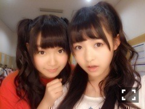

| 2013/08 27 Tue | 485回目*marika |
さゆりん、お誕生日おめでとう

いっつも笑顔でいてくれてて
優しくて愉快なお姉ちゃん。
だいすき！

今日の昼はひめたんヘアー
夜は編み込み三つ編み途中までして
残った毛先を巻いたやつ。
勝手にホウキヘアーと呼んでます。
この前ゆったんがしてて
かわいかったから真似したお

Zepp難波。
ありがとうございました！
みなさんノリノリで、
楽しかった。
さすが、大阪！
実は、今日は
すごくすごく緊張してた...
ついにコントの順番が
回ってきたんです。
今まで他のメンバーのコントを
袖で見てて笑ってたんだけども。
実際やるとなるとね...
こんな緊張すると思わなかったよ。
お笑いって難しい。
メンバーは
さゆりん、せっちゃん、ひめか、私！
さゆりんご飴を売り出す
愉快なさゆりん。
全てが棒読みのせっちゃん。
オーバーきゃぴきゃぴひめたん。
私はお祭りを一人で
楽しんでる女の子でした。
ツッコミやったんです！
なぜツッコミなのか！
ほんというとボケたかったの。
でも、すごく楽しかったー
夜来てくださったみなさん
感想きかせてください

昼は京都の
おじいちゃんおばあちゃんと
大阪のいとこが観に来てくれたの。
嬉しかった

夜はなんと日村さんが
わざわざ観にきてくださって。
ありがとうございました！
日村さん〜

不思議な写真
私があぐらかいてるように
見えたみたいだから撮ってもらった笑
挟まれました。
顔おわてる。
気にしないでください←
明日は名古屋！
ツアーの後半戦に入りました。
楽しみましょう

まりか
コメント(320)
2013/08/27 23:42